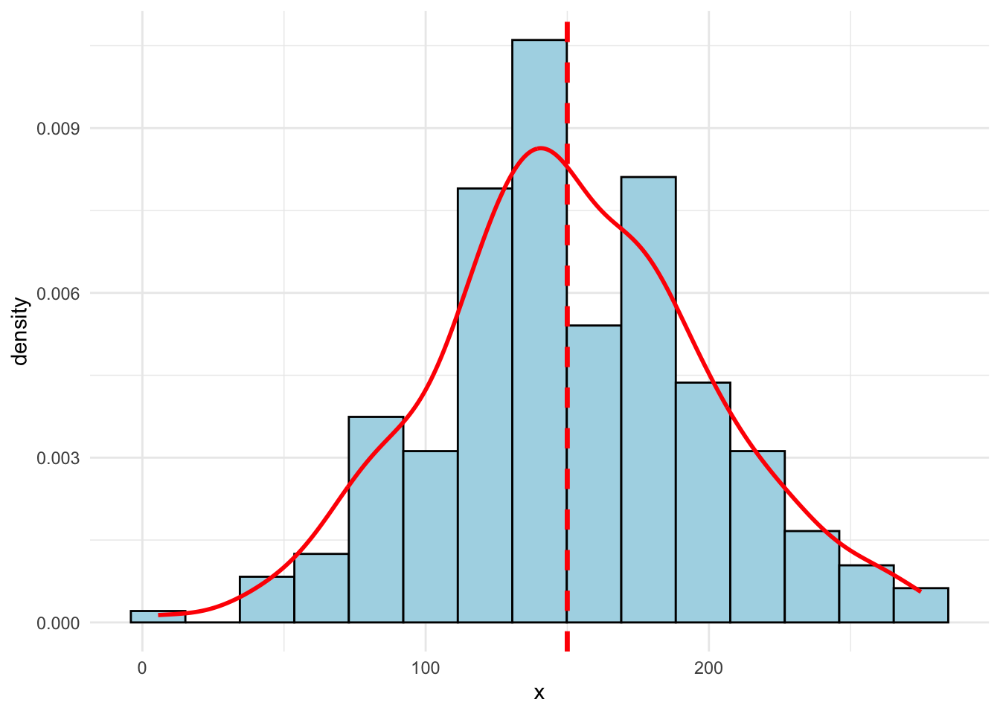
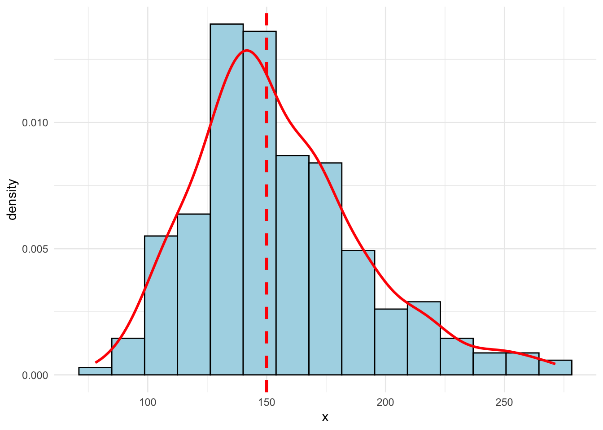

[1] "200,00%" " 50,00%" " 0,00%" " 25,00%" " 40,00%"8 Métricas de Qualidade de Modelos
Aplicadas à Engenharia de Avaliações
8.1 Introdução
O MAPE, ou Mean Absolute Prediction Error, é uma das métricas mais utilizadas na comunidade de Engenharia de Avaliações, especialmente nos modelos de Machine Learning. Esta métrica pode ser calculado de acordo com a Equação 8.1:
\[ \text{MAPE} = \frac{1}{n}\sum_{i = 1}^n \left | \frac{A_i - F_i}{A_i} \right | \tag{8.1}\]
Em que \(A_i\) é o valor observado e \(F_i\) é valor previsto pelo modelo.
Para compreensão do problema em adotar uma das métricas mais famosas, o MAPE, considere-se uma amostra de apenas 5 dados: {50, 100, 150, 200, 250}. A média amostral, \(\bar x\) , neste caso, e a mediana amostral, \(\tilde x\), são iguais, com valor 150. O MAPE para a média (ou mediana) amostral, portanto , é igual a 63,00%. Porém, para se analisar como se chega a esse número, pode-se calcular o erro percentual absoluto para cada dado da amostra (o MAPE nada mais é do que a média dos valores abaixo):
Nota-se que o erro percentual absoluto do primeiro dado amostral (\(X_1 = 50\)) é muito alto (200%). No entanto, o mesmo não ocorre para o outro lado: a uma mesma distância da média encontra-se o último dado (250). Só que o erro percentual absoluto deste dado é muito menor (apenas 40%).
Desta forma, se ao invés de utilizarmos a média amostral, utilizarmos um estimador arbitrário, por exemplo, \(\check x = 2\bar x/3\), i.e. se utilizamos o estimador \(\check x = 100\), ao invés de adotar a média ou a mediana amostral, teríamos um MAPE igual a 48,67%, i.e. 14,33 p.p. menor do que o MAPE para a média ou mediana. Seria esse estimador arbitrário, \(\check x\), em estimador superior à média (ou mediana) amostral? Para que fique bem claro, mostra-se abaixo os erros percentuais absolutos de cada dado amostral para o estimador arbitrário \(\check x\):
[1] "100,00%" " 0,00%" " 33,33%" " 50,00%" " 60,00%"Como o estimador arbitrário fica mais próximo dos dados de menor valor na amostra, então os erros percentuais para estes dados ficam menores (menor erro percentual passa de 200% para apenas 100%) e os erros percentuais para maior ficam apenas levemente superiores (maior erro percentual passa de 40% para 60%). Em outras palavras, minimizar o MAPE significa dar mais peso às observações de menor valor dentro da amostra.
Uma solução seria minimizar o erro relativo absoluto em relação ao valor de mercado, ou seja, minimizar a métrica da Equação 8.2:
\[ \text{MARE} = \frac{1}{n}\sum_{i = 1}^n \left | \frac{A_i - F_i}{F_i} \right | \tag{8.2}\]
Para a amostra em tela, os erros relativos percentuais absolutos seriam:
[1] "66,67%" "33,33%" " 0,00%" "33,33%" "66,67%"A média destes erros é \(\text{MARE} =\) 40,00%.
É fácil ver que o MARE é aumenta para outros estimadores fora da média ou mediana, como o estimador arbitrário \(\check x = 2\bar x/3\). Para este estimador, teríamos:
[1] " 50,00%" " 0,00%" " 50,00%" "100,00%" "150,00%"Ou seja, para o estimador arbitrário, \(\text{MARE} =\) 70,00%.
No entanto, para o estimador arbitrário \(\check x = 3\bar{x}/2\), i.e. para um estimador arbitrariamente superior à média/mediana amostral, o MARE seria menor, pois:
[1] "77,78%" "55,56%" "33,33%" "11,11%" "11,11%"Ou seja, para este segundo estimador arbitrário, \(\text{MARE} =\) 37,78%. Em suma, o MARE dá maior peso aos erros percentuais positivos, ao contrário do MAPE, ainda que este efeito seja menor no MARE do que no MAPE.
A solução, portanto, para fins de minimização, seria utilizar o sMAPE (MAPE simétrico) da Equação 8.3:
\[ \text{sMAPE} = \frac{2}{n} \sum_{i=1}^n \frac{ |x_i - \bar x|}{|x_i| + |\bar{x}|} \tag{8.3}\]
Para a média (ou mediana amostral), o valor dessa última métrica é 43,71%. Para o estimador arbitrário, \(\check x = 2\bar x/3\), o sMAPE seria igual a 51,81%. E para o segundo estimador arbitrário, \(\check x = 3\bar x/2\), o sMAPE fica igual a 53,30%.
Para entender, o erro percentual simétrico absoluto para cada dado da amostra seria (considerando-se média ou mediana):
[1] "50,00%" "20,00%" " 0,00%" "14,29%" "25,00%"Já com o primeiro estimador arbitrário, teríamos:
[1] "33,33%" " 0,00%" "20,00%" "33,33%" "42,86%"E para o segundo estimador arbitrário, tem-se:
[1] "63,64%" "38,46%" "20,00%" " 5,88%" " 5,26%"Em suma, o sMAPE equilibra melhor os erros abaixo e acima do estimador adotado.
8.2 Questões de interpretação
Para fins interpretativos, pondera-se:
O MAPE para a média (ou mediana) é igual a 63%, porém para os resíduos positivos, o erro percentual absoluto médio é igual a 25,00%, enquanto que para o es resíduos negativos este valor é igual a 50,00%. Em suma, além de não ser a métrica ideal para fins de minimização, como o MAPE considera o erro percentual em relação ao valor observado, mesmo em uma amostra simétrica, os erros positivos e negativos serão bem diferentes, ainda que em magnitudes iguais, o que prejudica a interpretação;
O MARE, ainda que não seja ideal para fins de minimização, pois privilegia suavemente os resíduos positivos, parece ser ótimo em termos interpretativos, pois permite saber quanto, em média, as observações distam do valor de mercado, em termos percentuais absolutos;
O sMAPE, embora talvez seja o ideal para fins de minimização, não parece ser de grande valia para fins de interpretação.
8.3 Outras opções
8.3.1 MAAPE
O MAAPE, ou Mean Arctangent Absolute Percentage Error, pode ser escrito conforme a Equação 8.4:
\[ \text{MAAPE} = \frac{1}{n}\sum_{i=1}^n \arctan \left ( \left | \frac{A_i - F_i}{A_i} \right | \right) \tag{8.4}\]
Para a média/mediana amostral:
[1] 0.4392563Para os estimadores arbitrariamente abaixo e acima da média/mediana:
[1] 0.4222432[1] 0.57524478.3.2 sMAE ou wMAPE
O MAPE ponderado, ou wMAPE, pode ser escrito conforme a Equação 8.5:
\[ \text{wMAPE} = \frac{\sum_{i=1}^n |x_i - \bar x|}{\sum_{i = 1}^n |x_i|} \tag{8.5}\]
O wMAPE também pode ser chamado de sMAE (scale Mean Absolute Error), que é definido como na Equação 8.6:
\[ \text{sMAE} = \frac{\text{MAE}}{\bar x} \tag{8.6}\]
Trata-se de uma métrica interessante, pois combina uma métrica de erro de predição bem aceita, o erro médio absoluto
Para a média/mediana amostral:
[1] 0.4Para os estimadores arbitrariamente abaixo e acima da média/mediana:
[1] 0.4666667[1] 0.56666678.3.3 MASE
O MASE, ou Mean Absolute Scale Error, é calculado conforme a Equação 8.7. É tido como uma métrica melhor do que qualquer erro percentual, porém, não tem finalidade interpretativa.
\[ \text{MASE} = \frac{\text{MAE}}{\frac{1}{n-1}\sum_{i = 1}^n|x_i - x_{i-1}|} \tag{8.7}\]
Para a média/mediana amostral:
[1] 1.2Para os estimadores arbitrariamente abaixo e acima da média/mediana:
[1] 1.4[1] 1.78.3.4 rMAE
O rMAE, ou Relative MAE é uma métrica interessante, que é o mean absolute error do modelo em análise comparado à mesma métrica de um modelo de referência (benchmark), conforme a Equação 8.8:
\[ \text{rMAE} = \frac{\text{MAE}_\text{modelo}}{\text{MAE}_{benchmark}} \tag{8.8}\]
um rMAE maior do que 1, então o modelo tem uma performance pior do que o benchmark. Se rMAE for menor do que 1, então o modelo em tela tem uma performance melhor do que o benchmark.
Para o benchmark, i.e., para a média/mediana, o MAE é:
[1] 60Para o estimador arbitrário a menor:
[1] 1.166667Para o estimador arbitrário a maior:
[1] 1.416667Ou seja, nenhum dos dois estimadores arbitrários é melhor do que a média/mediana amostra.
8.4 Estudos de Casos
Nesta seção as métricas serão analisadas para conjuntos de dados aleatórios com: (1) distribuição normal e; (2) distribuição lognormal. Para ambos os conjuntos de dados as métricas testadas serão computadas para diversos estimadores (moda, média, mediana, etc.).
8.4.1 Distribuição normal

Para a amostra da Figura 8.1, a média amostral resultou em 151,11, a mediana amostral é 147,76, a moda 1 é 140,67 e a média aparada (10%) é igual a 150,66.
Em suma, nota-se que, neste estudo de caso: a média resultou muito próxima ao parâmetro populacional (+0,74%); a mediana também se mostrou um bom estimador para a tendência central da amostra (-1,49%), um pouco menos eficiente do que a média, contudo; a moda resultou viesada para baixo (-6,22%); e a média aparada (10%) resultou como o estimador ótimo da tendência central (+0,44%).
Nota-se na Tabela 8.1 que, apesar do claro viés presente na moda amostral, o MAPE resultou menor para este estimador, assim como o MAAPE. As métricas sMAE, sMAPE e MASE resultaram mais baixos para mediana, enquanto o MARE resultou mais baixo para a média amostral. Nota-se, portanto, a métrica MAPE se mostrou a menos apta para informar o melhor estimador para a tendência central da amostra.
| Estimador | MAE | sMAE | MAPE | MAAPE | sMAPE | MARE | MASE |
|---|---|---|---|---|---|---|---|
| média | 38.01 | 25.15% | 41.42% | 26.67% | 26.44% | 25.15% | 68.12% |
| mediana | 37.83 | 25.04% | 40.39% | 26.22% | 26.36% | 25.6% | 67.81% |
| moda | 38.49 | 25.47% | 38.9% | 25.88% | 26.86% | 27.36% | 68.98% |
| média aparada (10%) | 37.97 | 25.13% | 41.27% | 26.6% | 26.42% | 25.2% | 68.05% |
Além disto, o MAPE mostra-se claramente inadequado quando utilizado como uma informação do erro percentual médio da amostra. O MAAPE mostrou-se, em termos de informação do erro percentual médio, uma métrica melhor, apesar de apresentar o mesmo problema do MAPE, de priorizar os valores mais baixos.
8.4.2 Distribuição lognormal

Para a amostra da Figura 8.2, a média amostral resultou rm 151,11, a mediana amostral é 147,76 e a moda é 140,67. Em suma, nota-se que a moda amostral encontra-se um pouco viesada para baixo, neste caso, enquanto os estimadores média e mediana são ambos bons estimadores para a tendência central da amostra.
Nota-se na Tabela 8.2 que o MAPE resultou menor para a moda amostral, enquanto as outras métricas foram melhores para a média ou mediana amostrais, assim como ocorreu com a distribuão normal.
Neste caso, deve-se notar que o MAPE elencou a moda como melhor estimador, enquanto as outras métricas colocaram a média ou mediana como mais precisos. Assim, a adoção do MAPE não pode ser considerada como ruim no caso de dados com distribuição lognormal, desde que o objetivo da modelagem seja estimar a moda da distribuição, que é realmente mais baixa que as outras medidas de tendência central. Contudo, se o objetivo for estimar a mediana, como é mais comum na Engenharia de Avaliações, as outras métricas são mais interessantes.
| Estimador | MAE | sMAE | MAPE | MAAPE | sMAPE | MARE | MASE |
|---|---|---|---|---|---|---|---|
| média | 38.43 | 25.43% | 42.74% | 27.3% | 26.68% | 24.8% | 68.87% |
| mediana | 37.85 | 25.05% | 40.58% | 26.3% | 26.36% | 25.5% | 67.83% |
| moda | 38.33 | 25.37% | 39.04% | 25.88% | 26.75% | 27.08% | 68.7% |
| média aparada (10%) | 38.11 | 25.22% | 41.78% | 26.84% | 26.5% | 25.04% | 68.3% |
| Distribuição dos dados | Melhor Estimador | Métricas |
|---|---|---|
| Normal | média | MARE |
| Normal | mediana | sMAE, sMAPE, MASE |
| Normal | moda | MAPE, MAAPE |
| LogNormal | média | MARE |
| LogNormal | mediana | sMAE, sMAPE, MASE |
| LogNormal | moda | MAPE, MAAPE |
8.5 Considerações finais
O MAPE mostrou-se uma métrica inadequada, a não ser que se pretenda estimar a moda de dados com distribuição lognormal. Caso contrário, ainda que a moda seja um péssimo estimador para a tendência central de dados com distribuição normal, o MAPE, assim como o MAAPE, apontam este estimador como o melhor preditor, o que é inadequado.
Ademais, os percentuais obtidos com o MAPE distam dos percentuais obtidos com as outras métricas para os mesmos estimadores. Ou seja, o MAPE não é uma boa métrica quando se deseja interpretar a real precisão dos modelos estatísticos.
O sMAPE parece ser uma métrica ideal, na engenharia de avaliações, para fins de minimização. Porém, para fins de interpretação, uma melhor métrica seria o MARE, que representa o quanto, percentualmente, os dados da amostra distam, em média, do valor de mercado estimado.
A moda amostral foi estimada com o pacote modeest, com o estimador de Parzen, que busca o valor máximo de uma densidade kernel gaussiana.↩︎